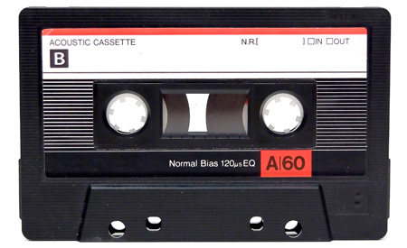

Cartão Perfurado
O Cartão Perfurado (Punched Card) foi inventado por Joseph-Marie Jacquard em 1804. Foi inventado com o objetivo de comandar
teares de forma automática, depois de ter percebido que as mudanças de linhas seguiam um certo padrão.
Os cartões perfurados contêm informações digitais representadas pela presença ou falta de furos em posições predefenidas e foi este
o método que mais tarde, entre 1900 e 1950, a Internacional Business Machines (IBM) utilizou para codificar as informações nos sistemas de armazenamento
de dados.
Tubo de Williams
O Tubo de Williams foi criado por Sir Frederick Williams na Universidade de Manchester em 1947. Este
foi o primeiro dispositivo digital de memória de acesso aleatório e possuía uma velocidade de 1,2
milésimos de segundo por instrução.
O Tubo de Williams foi utlizado pela primeira vez na construção de um computador em 1949.
Esse computador foi o Manchester Mark I.
Como funciona:
No seu processo de armazenamento de informação, um eletrão percorre sucessivas linhas na face do tubo, marcando com pontos
ou traços de carga elétrica florescente na placa representando, assim, os uns e os zeros do código binário.

Tambor de Memória
O tambor de memória, também conhecido como Drum Memory foi inventado por Gustav Tauschek em 1932 na Áustria.
A capacidade de armazenamento do tambor de memória original era de cerca de 500,000 bits.
é constituído por um cilindro de revolução metálico que roda em torno de um eixo vertical e o movimento é assegurado
por um motor elétrico. Um conjunto de cabeças fixas assegura a gravação e a leitura da informação.
Este sistema de armazenamento de dados foi especialmente importante pois, no início da década de 60 passaram a utilizar-se
na construção de computadores com memórias não voláteis, isto é, não perde a informação guardada depois de desligar a fonte
de energia.
UNISERVO
A unidade de fita UNISERVO, introduzida a 1951 e o seu lugar ficou garantido na história pois este dispositivo foi a
primeira unidade de fita para um computador vendido comercialmente.
O UNISERVO usava uma fita de metal, com 13 mm de largura, feita de uma liga níquel-bronze de fósforo (chamado Vicalloy) e
tinha 1200 metros de comprimento, e sendo esta incrivelmente pesada.
Os dados são guardados em 8 secções da fita, onde 6 são para os valores dos dados (1 ou 0), 1 para a verificação de erros e 1 que
regista o tempo, tudo isto à densidade de 128 bits por 2,54 cm. A fita pode ser movida a 254 cm por segundo, oferecendo uma taxa de
transferência nominal de 12,800 caracteres por segundo. Os blocos onde os dados são guardados possuem o tamanho fixo de 60 palavras
de 12 caracteres cada.
IBM 350 Disk Storage Unit
Em 1956, a IBM lançou no mercado o IBM 305 Random Access Method of Accounting and Control (RAMAC). Foi o primeiro computador a ser
comercializado para empresas, visto que até aqui os computadores eram exclusivos para aplicações militares. Assim, o RAMAC, foi projetado
para executar aplicativos de contabilidade e controlo de transações.
A novidade do computador 305 RAMAC, não era a sua capacidade de processamento mas sim a rapidez. Ao possibilitar que a informação
fosse gravada, lida e alterada em poucos segundos e, principalmente, pudesse ser feito o acesso de forma aleatória, eliminando a
necessidade de se classificar os dados em sequência antes do seu processamento, o que até então era um requisito imposto pelos
equipamentos de fita magnética ou cartões perfurados, que eram os meios disponíveis para se armazenar dados até ao momento, fez
com que o IBM 350 fosse um sucesso.
Este deispositivo foi também responsável por pôr fim à era dos cartões perfurados.
Cassete
A cassete ou compact cassete é um padrão de fita magnética para gravação de áudio. Foi lançada oficialmente em 1963 pela empresa
holandesa Philips, possuindo um armazenamento de 660 Kilobyte por cada lado da cassete. Com um tamanho de apenas 10 por 7 cm, a cassete
permitiu uma enorme economia de espaço face às fitas de rolo.
A cassete era de fácil manuseamento e a utilização permitindo que a fita fosse colocada ou retirada em qualquer ponto da
gravação ou reprodução sem a necessidade de ser rebobinada como as fitas de rolo.
No início, era possível gravar apenas 30 minutos em cada lado da fita, perfazendo assim uma hora de gravação. Ao longo do tempo,
foram aumentando a capacidade de gravação para 45, 60, 90 e até 120 mintutos.

Disquete
A Disquete, também conhecido como Floppy Disk Drive foi desenvolvida no final da década de 60 mas só ficou disponível
comercialmente em 1971. No fundo, a disquete é um disco protegido por uma capa para evitar que se danifique. O tamanho incial da
disquete era de 8 polegadas e tinha uma capacidade de armazenamneto de 80 KB.
Devido à fácil utilização, a disquete foi, por mais de duas décadas, o principal sistema de armazenamento de dados mais utilizado.
A maioria dos ambientes computacionais antes de 1990 não possuíam redes, e assim, as disquetes eram o principal sistema de
transferência de dados entre os computadores.
Contudo, vários motivos fizeram com que, com o passar dos anos, as disquetes acabassem em desuso. Alguns desses motivos são:
- Escassa capacidade de armazenamento em comparação com outras tecnologias mais avançadas.
- A facilidade com que se danificavam.
Tabela 1: Evolução da Disquete
| Tamanho do Disco |
Ano |
Capacidade |
| 8 pol |
1971 |
80 KB |
| 8 pol |
1973 |
256 KB |
| 8 pol |
1974 |
800 KB |
| 8 pol dual-sided |
1975 |
1 MB |
| 1.25 pol |
1976 |
160 KB |
| 1.25 pol |
1978 |
360 KB |
| 1.25 pol |
1980 |
720 KB |
| 1.25 pol |
1984 |
1.2 MB |
| 3 pol |
1984 |
320 KB |
| 1.5 pol |
1984 |
720 KB |
| 1.5 pol |
1987 |
1.44 MB |
| 1.5 pol |
1991 |
2.88 MB |
| 1.5 pol |
1993 |
5.76 MB |
Com a tabela pode concluir-se que, ao longo dos anos, a dimensão física tem tendência a diminuir,
inversamente à capacidade de armazenamento de dados que vai aumentando.
Sabia que?
- As disquetes foram os primeiros transmissores de vírus de computador.
IBM 3380
O IBM 3380 Direct Access Storage Device foi anunciado em Junho de 1980 pela IBM. Foi desenvolvido pela Universidade de Auckland e foi
o primeiro dispositivo de armazenamento a atingir o território do Gigabyte, ficando por esse mesmo feito na história.
A série 3380 teve vários modelos, sendo eles A4, A4F, AA4, AAF, B4 e BF4. Todos estes modelos eram apenas um dispositivo de armazenamento de dados
e não um computador. Todos esses modelos usavam duas hard drives com cerca de 1.26 Gigabyte cada, perfazendo, assim, um total de 2.52 GB.
Tinha uma taxa de transferências de dados 3 Megabyte por segundo.
Apesar dos vários modelos da série 3380 terem todas características semelhantes, as melhorias de cada série eram significativas.Comparando o primeiro modelo com o
último, foi possível reduzir o consumo de energia em 70% e a produção de calor em 75%. Estes avanços, fizeram com que o IBM 3380 se tornasse muito mais fiável e
eficiente.
ST-506
O ST-506 foi o apresentado em 1980 pela então denominada Shugart Technology, atualmente Seagate Technology e tinha uma capacidade de 5 MB. Foi
o primeiro disco rígido com um tamnho físico de apenas 5.25 polegadas e deu origem aos discos rígidos que utilizamos hoje em dia.
O ST-412 foi um modelo superior ao ST-506 lançado em fins de 1981, com um espaço de armazenamento de dados de 10 MB. Contudo, o dobro da capacidade de armazenamento
tinha um custo muito elevado. Ambos os modelos usavam codificação Modified Frequency Modulation.
Digital Audio Tape
A Digital Audio Tape (DAT) é uma cassete de gravação digital apresentado pela Sony em 1987.
Funcionava com uma fita magnética de 4mm para fazer a gravação de dados. As fitas do DAT tinham entre 15 a 180 minutos de duração.
Uma fita com 120 minutos tinha 60 metros de comprimento.
A DAT nunca foi "adotada"em larga escala pelos consumidores. Isto aconteceu devido aos elevados custos mas viu uso em gravação professional.
Sem grande sucesso, em 2005, a Sony descontinuou a produção da Digital Audio Tape.

CD-R
Um Compact Disk Recordable (CD-R) é um disco fino (1.2 mm) de policarbonato usado principalmente para gravar músicas ou dados,
que surgiu no de 1990 com um armazenamento de 700 MB.
Este suporte marcou a história pela sua ampla utilização e ainda atualmente consegue manter a sua presença tanto ao nível da gravação de música como de dados.
A superfície do Compact Disk (CD) contém uma longa pista espiral de dados. Ao longo da pista, existem zonas lisas reflexivas e solavancos não reflexivos.
A área lisa reflexiva representa o número binário 1, enquanto que o solavanco representa o número binário 0.

MiniDisc Data
O MiniDisc Data, também conhecido como MD Data ou apenas MiniDisc Data (MD), e como o nome indica,
é, basicamente, um disco com capacidade de armazenamento de informação e normalmente privilegia o áudio.
Foi anunciado pela Sony em 1991 mas apenas introduzida no mercado em 1992. Tinha uma capacidade de 140 MB armazenamento.
Contudo, o MD, à semelhança do Digital Audio Tape, nunca teve grande sucesso por várias razões:
era necessário estar em modo "play", logo não funcionava em computadores. O seu uso era predominante em câmeras digitais;
era muito caro; e era considerado lento.

ZIP Drive
O ZIP Drive é um sistema de disco removível de média capacidade, introduzido pela Iomega em 1994.
O ZIP Drive foi baseado no sistema Bernoulli Box da própria Iomega; em ambos os sistemas, um conjunto de cabeças de leitura/escrita
montado em atuadores lineares que flutuam em cima de uma disquete girando rapidamente, estando todas estas componentes dentro de um cartucho robusto.
O ZIP Drive usa estruturas menores com aproximadamente o tamanho de uma disquete de 3,5 polegadas, em vez dos discos compactos como os suportes multimédia Bernoulli.
Este dispositivo ficou na história por ser uma solução de armazenamento escolhida pelas empresas e designers onde tinham
uma drive rápida que era regravável e muito robusta.
Aliada a isto estava o seu preço, muito mais em conta, face às alternativas.

Seagate Barracuda
Seagate Barracuda é uma série do disco rígido, a maioria dos quais operam a uma velocidade de rotação de 7200 rpm (rotações por minuto).
Estes são produzidos pela Seagate Technology.
Esta foi a primeira unidade com 7200 rpm tornando-se num standard para a indústria dos discos rígidos e
dos nosso computadores e isso marcou a história do armazenamento.
Os dados são gravados na forma binária de 0 e 1. Estes são gravados em diferentes bandejas.
Estas bandejas são feita de uma liga de alumínio nãomagnética, vidro ou cerâmica e são revestidos com uma fina camada de material magnético.
Finalmente, estas são separadas em pilhas e setores, onde as pilhas são circunferências concêntricas e os setores em fatias de forma circular no top das pilhas.
O disco rígido guarda informação na forma de campos magnéticos.
Os dados são guardados digitalmente na forma de pequenas zonas magnetizadas no prato onde cada zona representa um bit.
Para escrever no disco, um campo magnético é colocado num pequeno campo numa das duas polaridades: Norte-Sul e SulNorte.
A orientação determina o número binário a introduzir. Se a orientação for "N-S"representa o "1", caso seja "S-N"representa o "0".
Esta polaridade é analisada por controladores integrados no disco rígido.

IBM 170 Microdrive
O Microdrive (MD) é um disco rígido de 1 polegada concebido para caber num Slot Tipo II CompactFlash.
Este sistema de armazenamento de dados teve bastante adesão por ser barato, com bastante oferta e grande capacidade de armazenamento.
(TABELA A INSERIR)
IBM DiskOnKey
Em 2000, a M-Systems e a IBM apresentaram a IBM DiskOnKey, também conhecida como USB drive.
A primeira unidade de armazenamento portátil que cabe num bolso e foi também a primeira unidade de armazenamento flash
(tipo de armazenamento explicado mais à frente) comercializada.
Com um tamanho de um polegar e com uma capacidade de armazenamento de 8 MB,
as USB drive revolucionaram as transferências de dados entre computadores.
Era muito mais simples e rápido do que todos os métodos anteriores e não precisava de nenhum software especial,
apenas uma ligação USB, e foi, por isso mesmo, responsável por pôr fim à utilização das disquetes.

Na memória flash a célula é composta por duas partes principais: o control gate (também chamado de controlador) e o floating gate.
O controlador é a parte mais externa, que realiza a comunicação da memória com o computador e é responsável por ativar a célula.
Os dados em si ficam armazenados no floating gate, que por sua vez é isolado por duas camadas de óxido de silício dotadas de carga negativa.
Para armazenar dados, uma carga elétrica é aplicada ao controlador. A tensão "empurra" alguns eletrões para o floating gate,
onde estes permanecem por causa das camadas de óxido.
Quando a capacidade de carga ultrapassa os 50%, é traduzido num "1", ao acontecer o contrário é traduzido "0".
Enquanto uma nova carga não é aplicada, o conteúdo do floating gate permanece inalterado, fazendo com que os dados possam ser lidos inúmeras vezes.

Ao longo dos anos, as USB drive foram sofrendo melhorias e na atualidade, a capacidade de armazenamento já chega aos 256 GB e a um preço mais convidativo.

SD Card
Os Secure Digital Card (SD) são pequenos cartões que são usados popularmente em câmaras, smartphones e GPS,
para fornecer ou aumentar a memória desses dispositivos. Surgiram no ano de 2000 com um armazenamento inicial de 32 MB.
Existem muitas versões mas a mais conhecida é sem dúvida o micro-SD, o cartão de memória que funciona na maioria dos smartphones.

Os cartões SD adicionam capacidades de criptografia e gestão de direitos digitais, adquirindo assim a qualidade de Secure(ITALICO).
Diferente do que acontece nos discos rígidos, em que o processo de gravação de informações é mecânico,
estes cartões utilizam a chamada memória flash. Também conhecida como armazenamento sólido, esse tipo de técnica de gravação
e leitura acaba por gerar equipamentos mais resistentes a impactos, mais velozes na transferência de dados e com maior durabilidade.
Fica na história por ser um dispositivo que não condiciona o tamanho do equipamento onde será usado.
Solid-State Drive
...
Cloud Storage
...